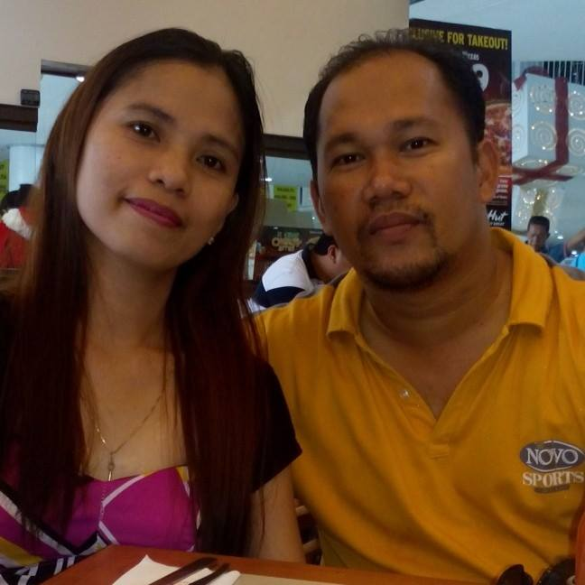

 The owner of the company; Marion 4th S. Depalubos, Works at M4D Engineering Services. Former Former Head of Engineering Department at The Aristocrat Restaurant. Former Service and Mantenance Manager at Airmetrics Industries Inc. Worked at IVCF Southern Mindanao. Former Senior Mechanical Engineer at AP Electromechanical & Construction Corp. Former Facility Engineer at The Aristocrat Restaurant. Former Assist. Project Manager at Ag&p Yard 2 - PPA. Former Assist. Project Manager at ANT Industrial Works, Inc. Former Part time professor at Emilio Aguinaldo College. Former Professor at Lyceum of the Philippines University Cavite. Former Professor at De La Salle University-Dasmariñas. Went to dssf(DAVAO del sur school of FISHERIES). Studied BSME, Mechanical Engineering at Mindanao State University, General Santos City, Philippines.
Filter cleaning, full dismantle, and pressure washing for either split type or window type aircon units.
Mechanical, electrical, or electronic errors, full dismantle, and general troubleshooting for either split type or window type aircon units.
For booking and inquiries, feel free to message us on our facebook page:
https://www.facebook.com/M4DEngineeringServices
Or contact the company owner directly:
• Engr. Marion 4th S. Depalubos:
Fb: https://www.facebook.com/marion.depalubos
Gmail: marion4depalubos@gmail.com
Mobile: 0948-259-6929